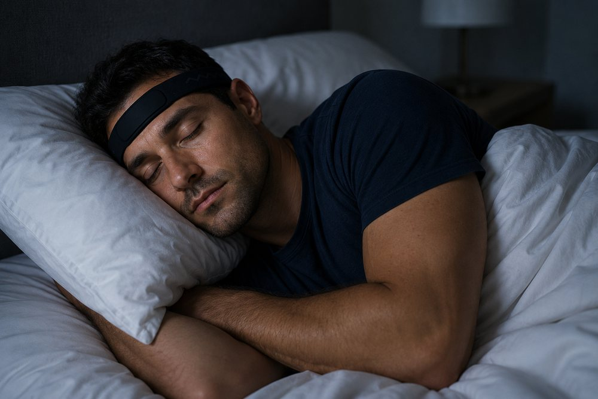
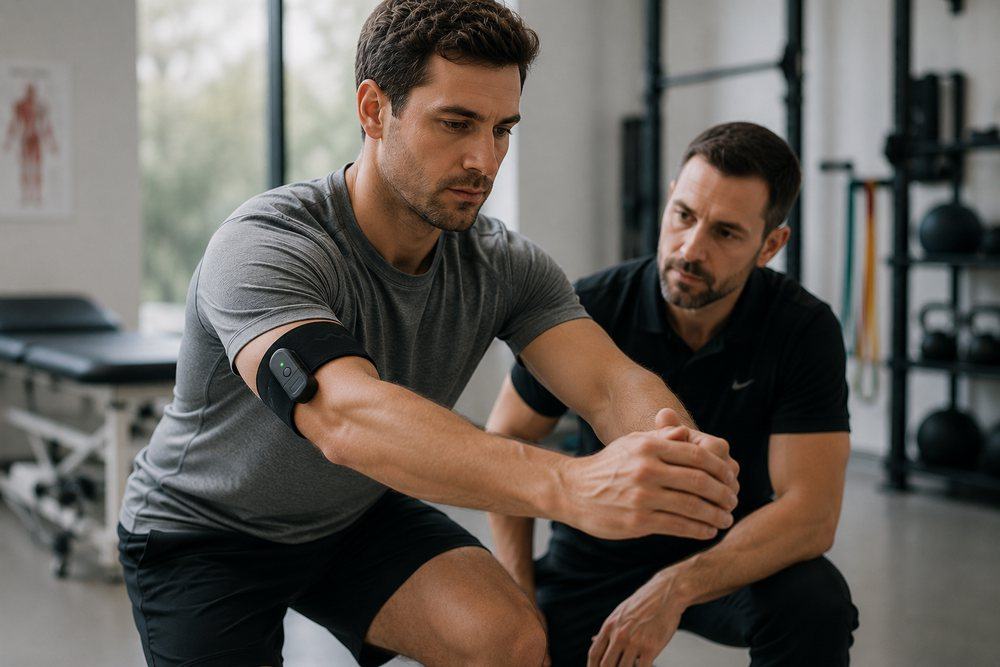
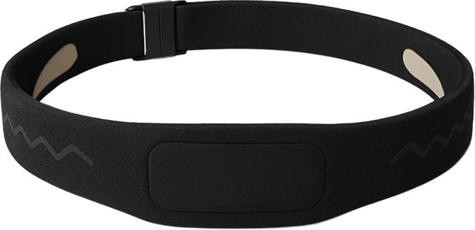
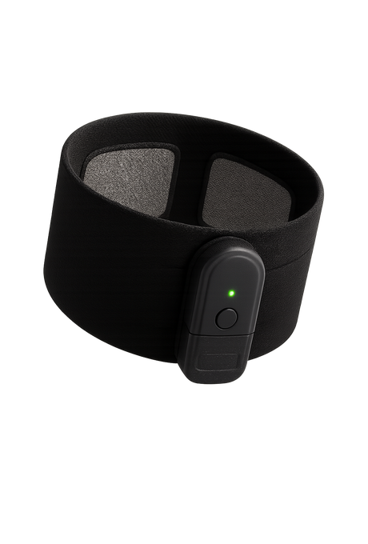
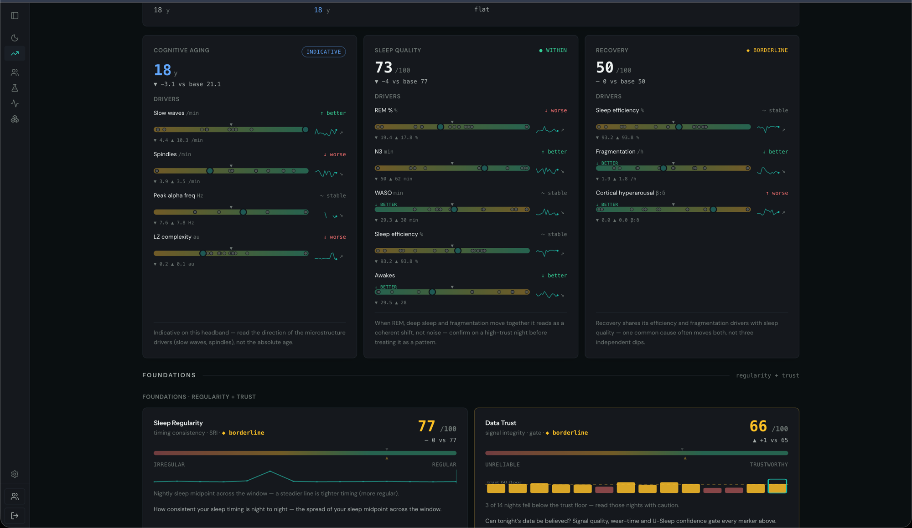

Your ring and your watch track heart rate and movement. Neither can reach the brain or the muscle. Insai measures both at clinical grade — the signals behind how you recover, perform, stay sharp, and age — and connects them to the wearables you already wear.
Your wearables read pulse and motion. The brain and the muscle take a clinic. Insai brings those two signals out of the lab and into the stack you already use — measured directly, not estimated from the wrist.


On their own, two signals nothing else captures.1 Combined with the data you already track, they complete the picture — and the platform turns that into a decision.
Rings and wrists capture a lot — heart, movement, and more. What they can't see is the brain and the muscle. Insai measures those two signals at clinical grade and folds them in with the data a client already tracks, into one physiological view. That's the platform.

Nexus · EEG headband
EMG sleeve
The wrist and the ring already do a lot well. They're just blind to two things: the brain and the muscle. Insai adds both directly, at clinical grade, with EEG and EMG — the only reason sleep can be staged at expert level4, and muscle activation seen at all.
Oura and Whoop read cardiovascular and activity signals well. We built brain and muscle monitoring for what they can't reach, and fuse all of it into one picture. No single wearable has everything; Insai is the layer that holds them together.
That picture becomes decision-grade analysis for the jobs that matter most: recovery and readiness, injury rehab, sleep and cognitive health, healthy aging. Measurement a coach can act on and check again later, not a self-reported guess.
Status Live today: clinical-grade sleep staging and muscle activation. In build: cross-signal baselines and the automated coach brief.
The same picture, aimed at the job each buyer is already trying to do, reached through the channels they already trust.
Force tests clear an athlete while the muscle is still firing wrong — the activation deficit behind the 1-in-5 re-injury rate. We catch it directly, next to true sleep recovery, for the staff who already test.2,3
Coaches prescribe recovery on a client's say-so. We hand them a measured, clinical-grade recovery read — brain and muscle, fused with the wrist data the client already wears — so remote coaching closes on evidence. First partner: Lenus Health.
Sleep architecture and neuromuscular function are among the most robust predictors of how you age — exactly what bloods, glucose and rings miss. Measured directly, next to the panel a clinic already runs.5,6
Start where the gap is sharpest: a pilot running our EMG through a return-to-play protocol, head to head with the force-plate standard. Prove we catch the deficit the test misses. Then the recovery and longevity doors open on evidence, not a pitch.
Sources: 1 sEMG reads muscle activation, timing and coordination that PPG and accelerometers cannot; wrist sleep estimates are individually unreliable (Frontiers Syst Neurosci 2022; Chinoy et al., Sleep 2021). 2 Quadriceps activation deficits persist after strength normalizes and return-to-sport (Lisee meta 2019; Schilaty 2023). 3 Passing the return-to-play battery is not associated with lower re-injury (Webster & Hewett, JOSPT 2019). 4 Wearable dry-EEG sleep staging κ≈0.76 vs polysomnography = human inter-scorer agreement (Lanthier, SLEEP Advances 2025; Lee, JCSM 2022). 5 Sleep regularity out-predicts duration for all-cause mortality (Windred et al., Sleep 2024, UK Biobank N=60,977). 6 Grip strength → all-cause mortality (Leong, Lancet/PURE 2015, N≈140k); sarcopenia redefined strength-first (EWGSOP2 2019).